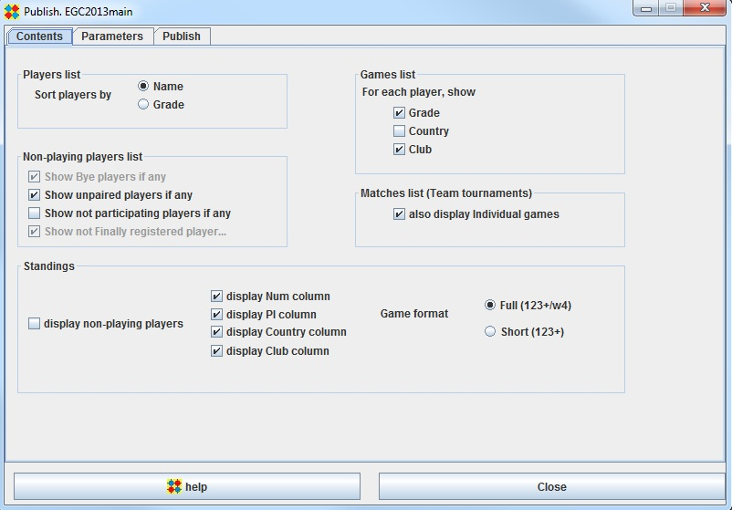

Contents

Players List
Games List
Non-Playing Players List
A player may be a non playing player in a given round for one of the four following reasons :
- He is a bye player : this occurs when the number of players for this given round is odd
- He has not been paired : this is usually a temporary situation. The organizer should pair the player
or set him as a bye player
or set his participation status to not-participating
- He does not participate in the given round. To set the participation status, use the Players .. Manager frame
- His registration status is Preliminary. To set the registration status, use use the Players .. Manager frame
or the Players .. Quick check frame
Matches List
This refers to team tournaments. If you do not check the "Also display individual games" checkbox,
only Team names will be displayed in the Print matches list or in the Export(html) matches list.
If you do check the checkbox, all individual players will be printed or exported as well.
Standings